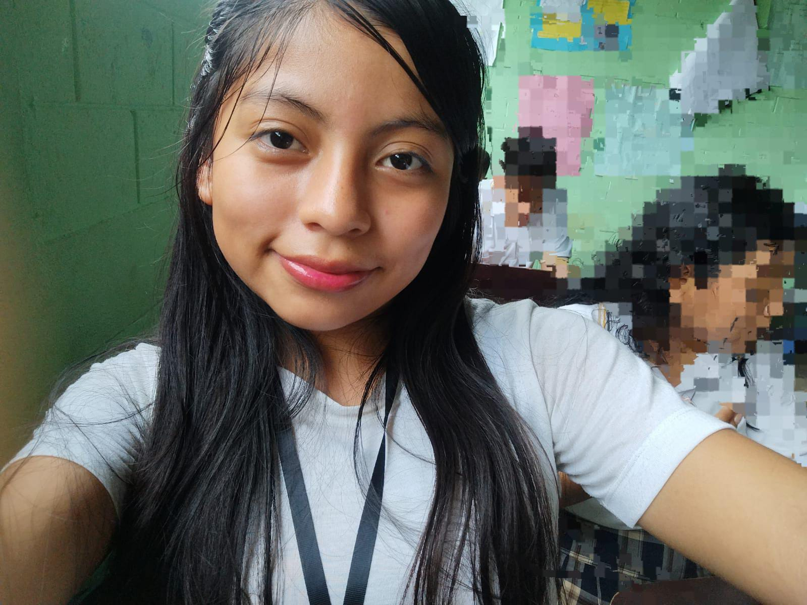
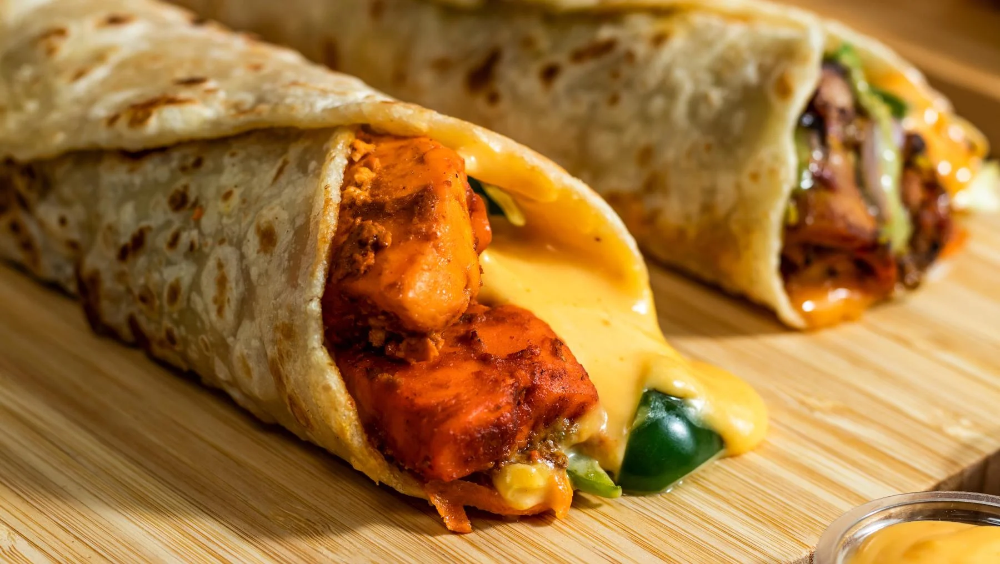

DESCRIPCIÓN PERSONAL
Buenas tardes, mi nombre es Cristina Alejandra Cardona Rodas. Tengo 15 años y vivo en Aldea Manantial Flores, Cosca Cuca.
Me gusta estudiar y trabajar, hacer amigos. Estudio en el INEB Juan José Téllez Martínez. Estoy en tercero básico y me gustaría estudiar enfermería y medicina.
¡Este es mi sueño y lo voy a lograr!
INFORMACIÓN PERSONAL
Correo electrónico: Crissscardonarodas7@gmail.com
Facebook: Criss C.R
Instagram: Criss C.R
TikTok: Criss C.R
MIS HOBBIES


MIS FOBIAS
INFORMACIÓN ACADÉMICA
- 2025 - Tercero básico - INEB Juan José Téllez Martínez
- 2024 - Segundo básico - INEB Juan José Téllez Martínez
- 2023 - Primero básico - INEB Juan José Téllez Martínez
- 2022 - Sexto primaria - Escuela de Manantial
- 2021 - Quinto primaria - Escuela de Manantial
- 2019 - Cuarto primaria - Escuela de Manantial
- 2018 - Tercero primaria - Escuela de Manantial
- 2017 - Segundo primaria - Escuela de Manantial
- 2016 - Primero primaria - Escuela de Manantial
OTROS DATOS
- Equipo: BARSA
- Artista: Karol G
- Jugador: Lamine
- Época: Invierno
- Animal: Gatos
- Color: Negro
- País favorito: Guatemala
COMIDAS FAVORITAS
